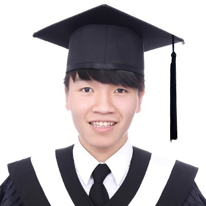

Professor Chia-Wen Lin |
Professor Lun-Wei Ku |
Dr. Yu-Lun Hsieh |
| Dr. Lin was named IEEE Fellow for his contributions to multimedia coding and editing in 2018. He is also a Distinguished Lecturer of IEEE Circuits and Systems Society (2018~2019). He has served on the editorial board of IEEE Transactions on Image Processing, IEEE Transactions on Circuits and Systems for Video Technology, He is Chair of the Multimedia Systems and Applications Technical Committee of IEEE Circuits and Systems Society. He was TPC Co-Chair of IEEE International Conference on Multimedia & Expo (ICME) 2010 and Special Session Co-Chair of IEEE ICME 2009. H will serve as General Co-Chair of IEEE VCIP 2018 and TPC Co-Chair of IEEE ICIP 2019. | Prof. Ku's research expertise lies in natural language processing, and information retrieval, especially in sentiment analysis and opinion mining. She is very active in the research community, and the international professional activities she involves include the program chair of StarSem 2019 and ARIS 2019, and the area chair of ACL, EMNLP, COLING 2020, EMNLP 2019, ACL 2017, CCL , NLPCC 2016, ACL-IJCNLP and EMNLP 2015. She is also very experienced in academic and industrial collaborations. Her research collaborators come from US, Singapore, Sweden and Israel, and she is currently working with data companies and banks. Her current research topics focus on recommendation, visual storytelling, sensational text generation, fake news intervention, knowledge-based question answering, lie detection and social media analysis. | Yu-Lun Hsieh received his Ph.D. from TIGP, Academia Sinica and National Chengchi University. Prior to that, he obtained an M.A. in Linguistics and B.Sc. in Computer Science from National Tsing-Hua University. His research interests include machine learning, natural language processing, deep neural models, adversarial attacks, and computational linguistics. In 2018, he was invited as a visiting scholar at University of California, Davis, in collaboration with Google AI, to explore adversarial robustness of neural network models. |
 Ms. Yun-Zhu Song |
 Professor Chu-Song Chen |
Dr. Ti-Rong Wu |
| Hello, my name is Yun-Zhu Song (Angela Song).I am currently a second-year Ph.D. student from Nation Chiao Tung University and major in deep learning for Natural Language Generation. I am interested in controlling the text characteristic and aim to find a better solution for feature manipulation. Additionally, due to the growing impact of social media, the behavior of rumor and fake news is also one of my research targets. | Chu-Song Chen is a research fellow/professor of IIS and a joint-appointment research fellow/Professor of CITI, Academia Sinica, Taiwan. He serves as an adjunct professor of GINM, National Taiwan University. He is also on the governing board of the Image Processing and Pattern Recognition (IPPR) Society, Taiwan. His research interests include deep learning, pattern recognition, computer vision, and multimedia. Currently, he serves as the associate editor of the journals Pattern Recognition (Elsevier) and Machine Vision & Applications (Springer). | He received his Ph.D. degree in Computer Science at National Chiao Tung University in 2020. His research interests include computer games, artificial intelligence, reinforcement learning, deep learning, and machine learning. He led a group that developed a computer Go program, named CGI Go Intelligence, which won second place in the First World AI Go Open in 2017. |
Dr. An-Zi Yen |
 Mr. Timothy Niven |
Ms. Hui-Ju Hung |
| Dr. An-Zi Yen received the Ph.D. degree in computer science and information engineering in 2020 from National Taiwan University, Taipei, Taiwan. She is currently a Post-Doctoral Fellow in the Department of Computer Science and Information Engineering at the National Taiwan University. Her research interests include natural language processing and information retrieval. Her work has been published in SIGIR, WWW, WI, ICMR, and so on. | I am originally a philosophy graduate and came to computational linguistics later in life. I am still a PhD student at the Intelligent Knowledge Management Lab at National Cheng Kung University, under professor Kao Hung-Yu. I have recently commenced working as a research scientist at Doublethink Lab in Taipei, working on information warfare. | Currently a Ph.D. candidate in the Pennsylvania State University. She received the B.S. degree from National Tsing Hua University and the M.S. degree from National Taiwan University. Her research interests include optimization and analysis on social networks. Some of her work has been published in ACM KDD, ACM CIKM, IEEE ICDCS, IEEE GLOBECOM, and IEEE TMC. |
 Mr. Yen-Hao Huang |
 Professor Wen-Huang Cheng |
Mr. Yu-Che Tsai |
| He is a Ph.D. Candidate and Teacher Assistant with the Institute of Information Systems and Applications, National Tsing Hua University since 2015. His current research interests include fake news analysis, emotion recognition, computational mental health, natural language processing, ,deep learning, computational mental health analysis | Prof. Cheng (IET Fellow) is Director of NCTU AI Graduate Program and Scientific Advisor to Taipei City Government. He is Associate Editor for IEEE Transactions on Multimedia, General co-chair for ACM ICMR (2021), TPC co-chair for ICME (2020), Chair-Elect for IEEE MSA-TC, governing board member for IAPR. His research interest includes multimedia, artificial intelligence, computer vision, machine learning, social media, and financial technology. He received research honors including 2018 MSRA Collaborative Research Award. | Bachelor’s degree in Statistical Science from NCKU, Tainan, Taiwan,in 2020. He is also a research assistant in Networked Artificial Intelligence Laboratory at NCKU. Main research interests include Data Mining, Machine Learning, Recommender Systems, and Deep Learning. His papers had been published in KDD 2020, CIKM 2019, and RecSys 2019. |
 Mr. Cheng-Chun Hsu |
 Mr. Yung-Han Huang |
Ms. Yun-Yun Tsai |
| I have worked as a research scientist in Facebook Reality Lab at Pro Unlimited @ Facebook since 2020. Previously, I was a research assistant in Vision and Learning Lab at Academia Sinica, advised by Prof. Yen-Yu Lin. My research focuses on computer vision and perception of machines. Particularly, my work aims to enable the machines to learn to understand visual data and improve its recognition ability with less human supervision. I am interested in Domain Adaptation, Instance Segmentation, and Weakly Supervised Learning. | I graduated from National Taiwan University with a master's degree in data science. I am interested in computer vision and deep learning. Specifically, my master thesis was focused on video related topics and weakly supervised methods. | Yun-Yun Tsai is currently a research assistant in the Department of Computer Science of National Tsing Hua University (NTHU). She has been working on artificial intelligence in security and the robustness in deep learning, including adversarial attack, defense, and robust evaluation. She has several paper publications in top conferences, such as ICML, NeurIPS workshop, and NDSS. Yun-Yun earned M.S. and B.S. in Computer Science in 2020 and 2018, both from NTHU. Currently, she worked with Professor Tsung-Yi Ho and Dr. Pin-Yu Chen from IBM Research. |